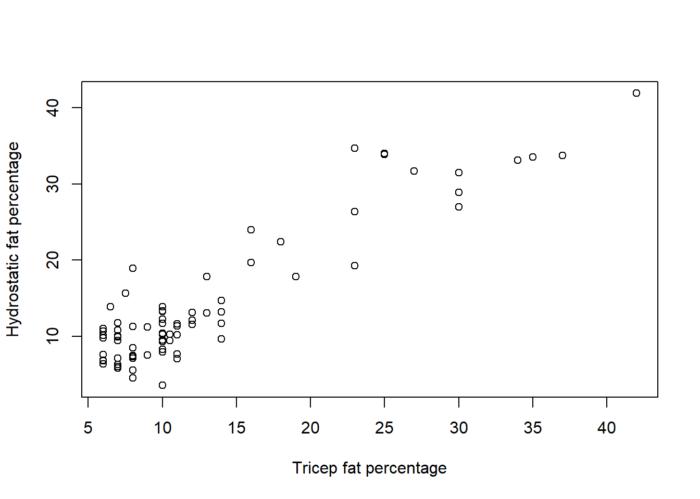

3 Exercise 1: From beginning to end
3.1 Part I: Construct ANOVA table
To use the HSWRESTLER data set, you will need to install and use the PASWR2 package.
To install the PASWR2 package, use install.packages("PASWR2).
Then enter the following code to obtain the data set HSWRESTLER:
## Loading required package: lattice## Loading required package: ggplot23.1.1 Constructing an ANOVA table
Construct an ANOVA table using the data in HSWRESTLER. Then, test if a linear relationship exists between the hydrostatic fat level (hwfat) and tricep fat (triceps) using the information in the ANOVA table at the \(\alpha = 0.05\) level.
Start by fitting the model and computing the ANOVA table.
Use the function anova() to obtain the ANOVA table.
## Analysis of Variance Table
##
## Response: hwfat
## Df Sum Sq Mean Sq F value Pr(>F)
## triceps 1 5056.3 5056.3 399.65 < 2.2e-16 ***
## Residuals 76 961.5 12.7
## ---
## Signif. codes: 0 '***' 0.001 '**' 0.01 '*' 0.05 '.' 0.1 ' ' 13.1.2 Testing for linear relationships
Test if a linear relationship exists between hwfat and triceps using the information in the ANOVA table at the \(\alpha = 0.05\) level.
Step 1: Calculate the rejection region, i.e., \(F_{obs}\).
\(F_{obs} =\)
Because \(F_{obs} \sim F_{1,76}\) and this is a one-tailed test, the rejection region is \(F_{obs} > F_{0.95;1,76} = 3.9691\) (from the statistical tables). The value of the standardised test statistic is \(F_{obs} = \frac{MSR}{MSE}\). This is also found in the ANOVA table output (note that the values will be slightly different due to the rounding).
\(F_{obs} = \frac{MSR}{MSE} = \frac{5056.3}{12.7} = 398.1339\)
Step 2: Use the p-value (Pr(>|F|))) in the ANOVA table to determine whether to reject \(H_0\) or not.
1. From the rejection region, we \(H_0\) because \(F_{obs}\) is 3.9691.
2. From the p-value, we \(H_0\) because the value for Pr(>|F|)) is 0.05.
Step 3: Interpret your results.
There is that suggests a linear relationship exists between the variables hwfat and triceps.
Compute \(R^2\) based on anova(model.lm) (it should be the same as the value returned in summary(model.lm))
\(R^2 =\)
The formula for \(R^2\) is \(R^2 = \frac{SST}{SST + SSE}\)
\(R^2 = \frac{SST}{SST + SSE} = \frac{5056.3}{5056.3+961.5} = 0.8402\)
3.2 Part II: \(R^2\) and linear model assumption
Our main question of interest is if the hydrostatic fat (hwfat) can be determined from the tricep fat level (triceps).
3.2.1 Methods
We will model the relationship between hydrostatic fat and tricep fat using a simple linear regression model and then check if this model is appropriate for the data. The model is given as
\(Y_i = \alpha + \beta x_i + \epsilon_i\),
where (a) the deterministic part of the model captures all the non-random structure in the data; (b) the random errors, \(\epsilon_i\), have constant variance; (c) the random errors, \(\epsilon_i\), are independent; (d) the random errors, \(\epsilon_i\), are normally distributed; (e) the explanatory variable, \(x\), is recorded without error.
We will consider assumptions (a)-(d) in this practical (assumption (e) cannot be assessed by examining the data).
3.2.2 Exploratory analysis
Firstly, produce a scatterplot of the response variable hwfat (\(y\)), against the predictor variable triceps (\(x\)).
Use the plot() command with hwfat as the response variable and triceps as the explanatory variable.
plot(hwfat ~ triceps, data = HSWRESTLER, xlab = "Tricep fat percentage", ylab = "Hydrostatic fat percentage")
What can we say about the relationship between hwfat and triceps?
3.2.3 Statistical analysis
A simple linear regression model can be fitted in R using the lm() command.
Fit a simple linear regression model to the HSWRESTLER data, with hwfat as the response variable and triceps as the explanatory variable.
3.2.4 Assumption checking
Before assessing the fit of the model, it is important to check that the assumptions underlying the model are satisfied. In order to do this, we need to obtain the residuals after fitting the model. These can be obtained using the commands:
residuals(model.hs)
rstandard(model.hs)
with the latter command providing the standardised residuals. These commands can be used to produce a plot of the residuals versus the fitted values and a normal probability plot (Q-Q plot) of the residuals to graphically assess assumptions (a), (b), and (d).
Plot the standardised residuals versus fitted values.
Use the function plot() with rstandard() and fitted() for the residuals versus fitted values.
Plot the normal probability (Q-Q) plot, including a line.
Use the function qqnorm() with the rstandard() function, and add a line with the function qqline().
From the plot, we can see that the points lie the line of equality (\(y=x\)). This means that it is to assume that the random errors are normally distributed. Note that this assumption is required only when we wish to make inferences about the parameters of the model to be applied to some wider population.
Now, plot the histogram of residuals using the function hist().
Use the function hist() and rstandard() to plot the histogram of residuals.
From the plot above, the histogram a reasonably bell-shaped curve, and hence normality appears .
3.2.5 Regression output
Obtain the regression model summary and examine the output.
Use the function summary() to examine regression output.
##
## Call:
## lm(formula = hwfat ~ triceps, data = HSWRESTLER)
##
## Residuals:
## Min 1Q Median 3Q Max
## -7.7634 -2.1184 -0.9116 2.2760 10.6725
##
## Coefficients:
## Estimate Std. Error t value Pr(>|t|)
## (Intercept) 1.57872 0.75035 2.104 0.0387 *
## triceps 0.97647 0.04885 19.991 <2e-16 ***
## ---
## Signif. codes: 0 '***' 0.001 '**' 0.01 '*' 0.05 '.' 0.1 ' ' 1
##
## Residual standard error: 3.557 on 76 degrees of freedom
## Multiple R-squared: 0.8402, Adjusted R-squared: 0.8381
## F-statistic: 399.6 on 1 and 76 DF, p-value: < 2.2e-16Print the analysis of variance (ANOVA) table.
Use the function anova() to obtain the ANOVA table.
## Analysis of Variance Table
##
## Response: hwfat
## Df Sum Sq Mean Sq F value Pr(>F)
## triceps 1 5056.3 5056.3 399.65 < 2.2e-16 ***
## Residuals 76 961.5 12.7
## ---
## Signif. codes: 0 '***' 0.001 '**' 0.01 '*' 0.05 '.' 0.1 ' ' 1From the summary table output we can see that the regression equation is (to 4 decimal places)
Hydrostatic fat = + \(\cdot\) tricep fat
Again, from the summary table output, the value of the coefficient of determination, \(R^2\), is %. This gives us the percentage of variation in hwfat that is explained by the linear regression model with triceps as a predictor. Hence % of the variation in the price of a diamond ring is explained by taking into account the weight of the diamond using out simple linear regression model. Hence the model gives fit to the data.
The adjusted coefficient of determination, \(R^2_a\), is also useful in examining model fit and can be obtained from the summary table output. In this case, \(R^2_a\) is %, which is than the \(R^2\) value.
Which of the two statistics, \(R^2\) and \(R^2_a\), is more appropriate to assess the model goodness of fit?
We can plot the data with the fitted line superimposed, such as in the Exploratory analysis section, using the command abline() after plotting the data.
Use the function plot() with hwfat as the response variable and triceps as the explanatory variable, and use the function abline() to add a regression line to the plot.